Digital VLSI Design — Course Project
Team 1 “Leaky Lima” · 16nm HP PTM · VDDnom = 1.0 V · 3-bit carry-lookahead adder
| Item | Value |
|---|---|
| Model file | 16nm_HP.pm (PTM, BSIM4 level 54) |
| Nominal VDD | 1.0 V (sampled ±10 %: 0.90–1.10 V) |
| Channel length | L = 16 nm; W = 1–8 × L = 16–128 nm |
| Gate sizing | Wn = 2L = 32 nm, Wp = 4L = 64 nm (interior of the training range) |
| Test circuit | 3-bit carry-lookahead adder: 42 library gates, 204 transistors, 7 inputs (128 vectors) |
| Simulator | ngspice-45.2 : Circuit level simulation program |
| Software | Python 3.14.8, scikit-learn 1.9.0, LightGBM 4.7.0, numpy 2.5.4, pandas 3.1.1 |
| Platform | macOS-27.0.1-arm64-arm-64bit-Mach-O, 11 cores |
| SPICE options | .options gmin=1e-18 abstol=1e-18 reltol=1e-6 vntol=1e-9 in every netlist |
Leakage definition. Gate and circuit leakage are the total static power divided by VDD,
Pstatic/VDD = Σ VkIk/VDD over the supply and the input sources.
The input sources matter because gate-tunnelling current into an input pin is real leakage that a driving gate
must supply. The plain supply current I(VDD) is also recorded (*_ivdd columns) and gives the same conclusions.
Terminal currents are positive into the device, so Id+Ig+Is+Ib = 0.
Accuracy metric. Mean accuracy = 100 % − mean |ML/SPICE − 1|. Medians, 95th percentiles and the worst case are reported alongside it.
For each of the four cases, 10,000 samples are drawn with every parameter independent. VDD is drawn first,
uniform within ±10 % of nominal. Vd and Vs are uniform in [0, VDD], W is uniform in [1, 8]×L
and T is uniform in [−40, 125] °C. The five process parameters (vth0, toxe, ndep, u0, xj) are each uniform within ±10 % of
the model-card nominal, separately for NMOS and PMOS. Vg and Vb are fixed by the case (ON: Vg = VDD for
NMOS / 0 for PMOS; OFF: the opposite; body at the device's own rail). All draws use fixed seeds
(SEED_DATA = 2026), and these 10,000-row files are deliverable 1.
A uniform draw almost never puts a terminal on a rail: 3 in 10,000 samples are within 2 % of both rails. Inside a gate, however, the leaking transistor always has its source on a rail and its drain at the output (≈ 0 or VDD). We therefore add a rail-focused supplement of 5,000 samples per case. In it, Vd and Vs are exactly 0 or VDD one third of the time and otherwise follow an arcsine law that is dense near both rails. In half of these samples Vg is moved up to 10 % of VDD off its ideal level, because a gate driven by another gate sees a logic 0 a few tens of mV above ground. A third set of 2,000 samples per case at the gate widths and rail voltages (the deployment check) is used only for validation and test. No gate or circuit simulation is ever used for training or model selection.
The single-FET netlist (one per case in netlists/single_*.cir) has one transistor and a separate voltage source on every
terminal, so all four terminal currents are read directly through their sources. For speed, one ngspice process runs a whole batch of
samples, changing the process parameters with altermod and the width, voltages and temperature with alter between
op analyses. A self-check re-simulates samples as fresh standalone netlists and confirms the batch loop reproduces them. Besides the
terminal currents, the BSIM4 internal current components (Ids, Igs, Igd, Igcs, Igcd, Igb,
GIDL/GISL, Isub, junction currents) are recorded. They are regrouped into six physical bipoles (ds, gs, gd, gb, db, sb), which
rebuild the four terminal currents exactly. Gate and circuit netlists are generated from the same transistor list that the ML side uses,
so SPICE and ML cannot disagree about topology. Each starts from a logic-level .nodeset; the reason is given in §6.
Each 10,000-row dataset is split 70/15/15 (7,000 train / 1,500 validation / 1,500 test) with SEED_SPLIT = 42.
The rail supplement is split the same way and its training part is added to the training data. The test parts are touched once, after model
selection. Split indices are saved in results/split_*.npz.
| Case | samples | median |ΣI| (A) | max |ΣI| (A) | median |ΣI|/max|I| | p95 |ΣI|/max|I| |
|---|---|---|---|---|---|
| NMOS ON | 10000 | 1.76×10-14 | 9.88×10-13 | 9.78×10-10 | 4.34×10-8 |
| NMOS OFF | 10000 | 5.62×10-20 | 4.27×10-15 | 8.93×10-10 | 3.71×10-9 |
| PMOS ON | 10000 | 7.60×10-15 | 9.86×10-13 | 8.63×10-10 | 1.49×10-8 |
| PMOS OFF | 10000 | 9.81×10-17 | 8.38×10-15 | 2.09×10-4 | 2.04×10-2 |
KCL closes to 10−9 of the largest terminal current in the median for every case. The largest relative residuals (PMOS OFF, up to 14.5 %) occur only where every terminal current is around 10−15 A. That is the simulator's absolute tolerance (abstol = 10−18 A amplified by the solver's convergence check), not a physical violation: the absolute residual never exceeds 9.88×10-13 A.
Predicting the four terminal currents directly is hard: they span about 12 decades, change sign, and Is is often the difference of two much larger opposite currents. We use the structure of the device instead. Each of the six bipoles is a passive two-terminal element whose current always flows from its higher to its lower terminal. The model therefore learns its conductance G = I/V, as log G per unit width, and rebuilds the terminal currents with KCL: Id = Ids − Igd + Idb, and so on. This guarantees exact KCL, the correct sign of every current, and I = 0 at V = 0. Five sub-models per case share the inputs: channel (ds), gate-to-diffusion tunnelling (gs and gd, one model evaluated twice), gate-to-body, drain-junction and source-junction.
Features (per sub-model): VDD, T [K], log(Weff/L), ΔVg/VT (offset of the gate from its ideal level), the five process parameters relative to nominal, the two terminal voltages of the bipole, V/VT, log|V|, and three Arrhenius-type inputs 1/VT, Vth0/VT and (VDD−Vth0)/VT, since sub-threshold current goes as exp(−Vth/nVT). The width normalisation follows BSIM4 for each mechanism. A width sweep in SPICE showed:
Without the clamp the models carried a +2 % bias into every gate.
All families use the same bipole targets and features. Selection uses the mean of the median-relative-error scores on three validation sets: uniform, rail-focused and deployment check. The table below is the brief's uniform validation set.
| Case | Model | hyper-params | id R² | id med % | id p95 % | ig R² | ig med % | ig p95 % | is R² | is med % | is p95 % | ib R² | ib med % | ib p95 % |
|---|---|---|---|---|---|---|---|---|---|---|---|---|---|---|
| NMOS OFF | MLP | 3×64, 5 seeds | 1.0000 | 0.18 | 2.30 | 1.0000 | 0.09 | 0.31 | 1.0000 | 0.18 | 2.07 | 0.9999 | 0.14 | 1.02 |
| NMOS OFF | LightGBM | leaves=31 | 0.9942 | 1.61 | 20.26 | 1.0000 | 0.75 | 2.27 | 0.9967 | 1.52 | 19.22 | 0.9982 | 0.57 | 10.02 |
| NMOS OFF | Polynomial + ridge | degree=3 | 1.0000 | 0.13 | 1.77 | 1.0000 | 0.08 | 0.20 | 0.9910 | 0.15 | 2.06 | 0.7564 | 11.19 | 61.61 |
| NMOS OFF | Random forest | trees=300 | 0.9867 | 2.06 | 49.92 | 0.9999 | 0.84 | 3.47 | 0.9912 | 2.23 | 48.49 | 0.9931 | 0.57 | 23.72 |
| NMOS ON | MLP | 3×64, 5 seeds | 1.0000 | 0.79 | 3.73 | 1.0000 | 0.25 | 1.17 | 1.0000 | 0.79 | 3.73 | 1.0000 | 0.39 | 1.46 |
| NMOS ON | LightGBM | leaves=31 | 1.0000 | 2.48 | 28.12 | 0.9995 | 3.71 | 12.09 | 1.0000 | 2.49 | 27.94 | 0.9987 | 6.73 | 24.70 |
| NMOS ON | Polynomial + ridge | degree=4 | 0.9999 | 7.34 | 26.28 | 0.9958 | 10.34 | 33.03 | 1.0000 | 7.33 | 26.22 | 0.9981 | 8.93 | 25.31 |
| NMOS ON | Random forest | trees=300 | 0.9998 | 6.07 | 56.88 | 0.9964 | 8.90 | 30.95 | 0.9999 | 6.07 | 56.26 | 0.9894 | 18.56 | 67.03 |
| PMOS OFF | MLP | 3×64, 5 seeds | 1.0000 | 0.28 | 2.09 | 0.9936 | 0.28 | 1.49 | 1.0000 | 0.51 | 2.33 | 0.9999 | 0.34 | 1.33 |
| PMOS OFF | LightGBM | leaves=31 | 0.9990 | 6.01 | 42.80 | 0.9935 | 1.17 | 3.69 | 0.9979 | 10.03 | 46.77 | 0.9962 | 1.07 | 12.40 |
| PMOS OFF | Polynomial + ridge | degree=3 | 0.9998 | 1.79 | 18.36 | 0.9936 | 0.22 | 1.55 | 0.9977 | 1.26 | 25.22 | 0.9689 | 11.31 | 60.79 |
| PMOS OFF | Random forest | trees=300 | 0.9946 | 17.34 | 139.94 | 0.9934 | 1.51 | 5.40 | 0.9954 | 28.46 | 171.13 | 0.9879 | 1.65 | 25.27 |
| PMOS ON | MLP | 3×64, 5 seeds | 1.0000 | 0.64 | 2.82 | 1.0000 | 0.43 | 1.53 | 1.0000 | 0.64 | 2.81 | 1.0000 | 0.39 | 1.33 |
| PMOS ON | LightGBM | leaves=31 | 1.0000 | 2.44 | 20.01 | 0.9991 | 7.23 | 22.43 | 1.0000 | 2.44 | 19.96 | 0.9991 | 6.36 | 20.70 |
| PMOS ON | Polynomial + ridge | degree=4 | 1.0000 | 6.96 | 23.12 | 0.9969 | 8.96 | 27.97 | 0.9998 | 6.96 | 23.22 | 0.9982 | 8.98 | 27.36 |
| PMOS ON | Random forest | trees=300 | 0.9999 | 6.62 | 40.84 | 0.9934 | 18.36 | 65.26 | 0.9999 | 6.62 | 40.81 | 0.9937 | 16.32 | 59.30 |
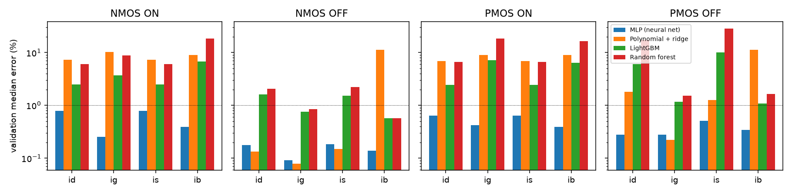
Choice. The MLP wins every case, usually by 5–20× in median error and more in the 95th percentile. Log-conductance is a smooth function of the inputs, a sum of exponents with gentle non-linearities, which a tanh network represents with few parameters. Trees fit it in piecewise-constant steps, which gives the heavy p95 tails in Table 2. A degree-3/4 polynomial is accurate where it is flexible enough (NMOS OFF Id) but fails on mechanisms with sharper bias dependence, for example the junction/GIDL current in Ib. Of the two MLP sizes, the 64-unit network was selected for every case.
| Case | Model | id med % | ig med % | is med % | ib med % | id p95 % | ig p95 % | is p95 % | ib p95 % |
|---|---|---|---|---|---|---|---|---|---|
| NMOS ON | MLP | 0.69 | 0.24 | 0.69 | 0.37 | 3.92 | 1.07 | 3.87 | 1.38 |
| NMOS OFF | MLP | 0.17 | 0.10 | 0.18 | 0.14 | 2.23 | 0.31 | 2.02 | 1.06 |
| PMOS ON | MLP | 0.59 | 0.41 | 0.59 | 0.38 | 2.90 | 1.60 | 2.90 | 1.39 |
| PMOS OFF | MLP | 0.32 | 0.30 | 0.53 | 0.33 | 2.00 | 1.70 | 2.26 | 1.45 |
| Case | id med % | ig med % | is med % | ib med % | id p95 % | ig p95 % | is p95 % | ib p95 % |
|---|---|---|---|---|---|---|---|---|
| NMOS ON | 1.60 | 0.73 | 1.59 | 0.38 | 7.25 | 1.77 | 7.16 | 1.25 |
| NMOS OFF | 0.83 | 0.12 | 0.83 | 2.57 | 2.66 | 0.47 | 2.71 | 15.23 |
| PMOS ON | 0.78 | 0.38 | 0.78 | 0.39 | 4.08 | 1.52 | 4.02 | 1.52 |
| PMOS OFF | 0.86 | 0.38 | 0.86 | 2.93 | 3.10 | 1.71 | 3.10 | 14.29 |
On the test set the median error is below 1 % for every current and case. On the deployment-check set the
leakage-carrying currents (Id, Is) stay below 1 % in the median. The larger OFF-state Ib errors there are on
body currents of about 10−14 A, six to seven decades below the channel current, so they do not affect gate leakage. The PMOS-OFF Ig and Is rows evaluate fewer
samples (see the eval_frac columns of chosen_models_test.csv), because those currents are often below the
10−14 A floor.
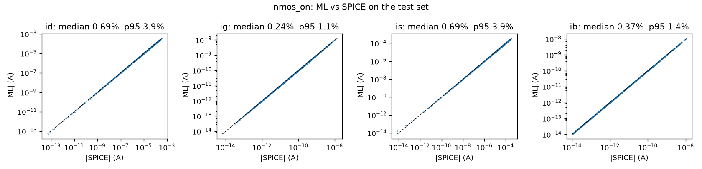

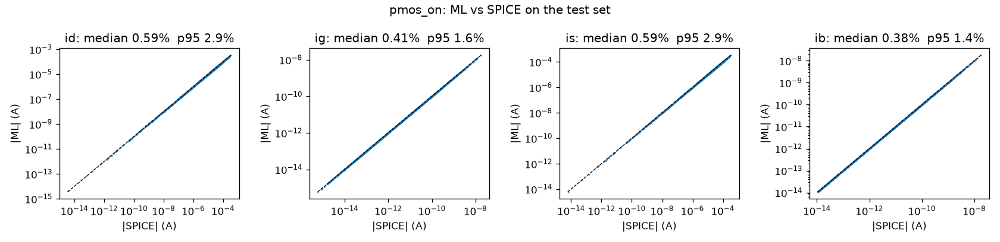
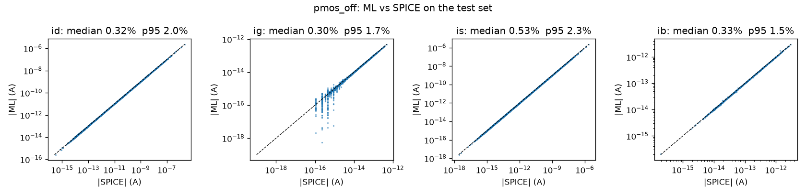
The ablation trains the same MLP (same size, same rows, same ensemble) to predict each terminal current directly, on an asinh scale. It is 24.6× worse in median error (median over the 16 currents). The learning curve retrains the chosen recipe on 500 to 7000 uniform samples (plus half as many rail samples). The median error reaches within 25 % of the full-size model at NMOS ON n = 2000, NMOS OFF n = 4000, PMOS ON n = 2000, PMOS OFF n = 4000. This answers the brief's question of the smallest sufficient dataset: a few thousand SPICE samples per case.
| Case | current | direct med % | direct p95 % | bipole med % | bipole p95 % |
|---|---|---|---|---|---|
| NMOS ON | id | 5.54 | 37.04 | 0.79 | 3.73 |
| NMOS ON | ig | 8.05 | 48.10 | 0.25 | 1.17 |
| NMOS ON | is | 5.09 | 32.94 | 0.79 | 3.73 |
| NMOS ON | ib | 9.63 | 42.91 | 0.39 | 1.46 |
| NMOS OFF | id | 6.32 | 91.95 | 0.18 | 2.30 |
| NMOS OFF | ig | 3.05 | 13.89 | 0.09 | 0.31 |
| NMOS OFF | is | 6.41 | 97.44 | 0.18 | 2.07 |
| NMOS OFF | ib | 0.50 | 9.92 | 0.14 | 1.02 |
| PMOS ON | id | 5.78 | 30.71 | 0.64 | 2.82 |
| PMOS ON | ig | 10.56 | 44.60 | 0.43 | 1.53 |
| PMOS ON | is | 6.13 | 31.71 | 0.64 | 2.81 |
| PMOS ON | ib | 9.73 | 38.08 | 0.39 | 1.33 |
| PMOS OFF | id | 9.02 | 76.19 | 0.28 | 2.09 |
| PMOS OFF | ig | 6.19 | 23.03 | 0.28 | 1.49 |
| PMOS OFF | is | 12.41 | 88.13 | 0.51 | 2.33 |
| PMOS OFF | ib | 0.81 | 11.70 | 0.34 | 1.33 |
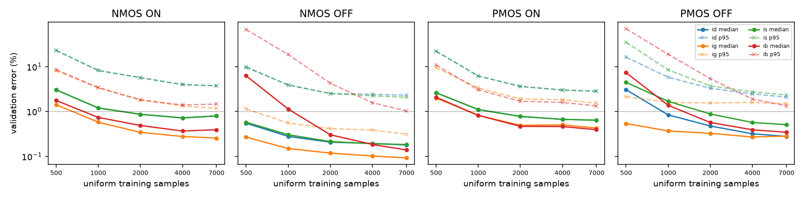
| Case | current | n = 500 | n = 1000 | n = 2000 | n = 4000 | n = 7000 |
|---|---|---|---|---|---|---|
| NMOS OFF | ib | 6.24 | 1.13 | 0.30 | 0.18 | 0.14 |
| NMOS OFF | id | 0.55 | 0.28 | 0.21 | 0.19 | 0.18 |
| NMOS OFF | ig | 0.27 | 0.15 | 0.12 | 0.10 | 0.09 |
| NMOS OFF | is | 0.57 | 0.30 | 0.21 | 0.19 | 0.18 |
| NMOS ON | ib | 1.76 | 0.73 | 0.49 | 0.36 | 0.39 |
| NMOS ON | id | 3.03 | 1.19 | 0.86 | 0.72 | 0.79 |
| NMOS ON | ig | 1.42 | 0.57 | 0.34 | 0.28 | 0.25 |
| NMOS ON | is | 3.03 | 1.19 | 0.86 | 0.72 | 0.79 |
| PMOS OFF | ib | 7.35 | 1.37 | 0.57 | 0.39 | 0.34 |
| PMOS OFF | id | 3.05 | 0.84 | 0.47 | 0.32 | 0.28 |
| PMOS OFF | ig | 0.54 | 0.37 | 0.32 | 0.27 | 0.28 |
| PMOS OFF | is | 4.45 | 1.68 | 0.88 | 0.57 | 0.51 |
| PMOS ON | ib | 2.07 | 0.82 | 0.46 | 0.46 | 0.39 |
| PMOS ON | id | 2.61 | 1.10 | 0.77 | 0.67 | 0.64 |
| PMOS ON | ig | 2.00 | 0.82 | 0.49 | 0.50 | 0.43 |
| PMOS ON | is | 2.61 | 1.10 | 0.77 | 0.67 | 0.64 |
Each of the 18 gate/input cases is simulated at the same 200 random corners. A corner is one draw of VDD, T and process: one draw for all
NMOS and one for all PMOS. Following the brief, the ML leakage uses the SPICE-recorded internal and output voltages to set each transistor's
terminal voltages, then sums V·I over the predicted bipole currents. As an extension (§7.1), the internal and output node voltages
are also solved from the ML models alone. Both sets of node voltages are recorded in results/gate_samples.csv.
| Gate | inputs | SPICE median (A) | ML median (A) | bias % | median err % | p95 err % | max err % | ML-solved med % | ML-solved p95 % | max |ΔV| node (mV) |
|---|---|---|---|---|---|---|---|---|---|---|
| INV | 0 | 1.61×10-7 | 1.61×10-7 | -0.11 | 0.70 | 2.43 | 4.97 | 0.66 | 2.40 | 0.18 |
| INV | 1 | 8.08×10-7 | 8.15×10-7 | +0.46 | 0.79 | 3.06 | 5.73 | 0.79 | 2.90 | 1.60 |
| NAND2 | 00 | 7.92×10-10 | 7.91×10-10 | -0.23 | 0.34 | 1.17 | 1.74 | 0.43 | 1.43 | 1.26 |
| NAND2 | 01 | 1.57×10-7 | 1.55×10-7 | -0.19 | 0.65 | 2.30 | 4.51 | 0.66 | 2.25 | 0.43 |
| NAND2 | 10 | 1.72×10-8 | 1.74×10-8 | +0.79 | 0.86 | 2.82 | 4.19 | 0.82 | 2.60 | 1.60 |
| NAND2 | 11 | 1.34×10-6 | 1.35×10-6 | +0.18 | 0.88 | 2.71 | 4.25 | 0.81 | 2.13 | 2.47 |
| NOR2 | 00 | 3.18×10-7 | 3.13×10-7 | -0.11 | 0.65 | 2.35 | 4.72 | 0.69 | 2.29 | 0.54 |
| NOR2 | 01 | 6.48×10-7 | 6.60×10-7 | +0.11 | 0.88 | 3.04 | 5.18 | 0.64 | 2.51 | 1.29 |
| NOR2 | 10 | 4.92×10-8 | 4.96×10-8 | +0.14 | 0.63 | 2.34 | 2.97 | 0.63 | 2.44 | 1.75 |
| NOR2 | 11 | 9.47×10-10 | 9.58×10-10 | +0.31 | 0.62 | 1.87 | 2.44 | 0.96 | 2.44 | 1.79 |
| AND2 | 00 | 8.08×10-7 | 8.16×10-7 | +0.46 | 0.79 | 3.06 | 5.73 | 0.79 | 2.90 | 1.60 |
| AND2 | 01 | 1.04×10-6 | 1.04×10-6 | +0.22 | 0.66 | 2.57 | 5.40 | 0.66 | 2.41 | 1.67 |
| AND2 | 10 | 8.25×10-7 | 8.34×10-7 | +0.44 | 0.75 | 3.01 | 5.71 | 0.77 | 2.84 | 1.62 |
| AND2 | 11 | 1.70×10-6 | 1.71×10-6 | +0.27 | 0.76 | 2.30 | 3.87 | 0.71 | 2.00 | 2.47 |
| OR2 | 00 | 1.22×10-6 | 1.23×10-6 | -0.01 | 0.59 | 2.32 | 5.08 | 0.58 | 2.16 | 1.57 |
| OR2 | 01 | 8.83×10-7 | 8.83×10-7 | +0.11 | 0.75 | 2.46 | 4.75 | 0.60 | 2.28 | 1.29 |
| OR2 | 10 | 2.18×10-7 | 2.18×10-7 | +0.00 | 0.61 | 2.19 | 4.42 | 0.58 | 2.14 | 1.75 |
| OR2 | 11 | 1.62×10-7 | 1.62×10-7 | -0.10 | 0.70 | 2.42 | 4.97 | 0.66 | 2.40 | 1.79 |

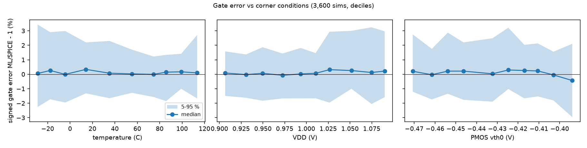
Most and least accurate. Mean accuracy per gate: INV 99.01 %, NAND2 99.15 %, NOR2 99.11 %, AND2 99.03 %, OR2 99.14 %. The most accurate case is NAND2 00 (p95 1.17 %). Its leakage is set by a two-transistor OFF stack, whose current is small and dominated by a single, well-sampled mechanism. The least accurate is INV 1 (p95 3.06 %). The cases with the largest tails (INV 1, AND2 00/01/10, whose output inverter sees a 1, and NOR2 01, OR2 00) all leak through a single OFF PMOS with Vsd ≈ VDD. That makes the PMOS-OFF channel model the accuracy bottleneck at gate level, consistent with it having the highest test p95 in Table 3. The stack effect is visible in the SPICE medians: NAND2 00 and NOR2 11 leak about 200× less than an inverter, because the internal node rises (falls) and reverse-biases the upper OFF device. The models reproduce this without being told: the ML-solved internal node voltages agree with SPICE to within 2.47 mV (median 0.051 mV).
The adder is built only from library gates. The propagate signals pi = ai⊕bi use 4-NAND2 XORs and the generate signals gi = aibi use AND2. Each carry is computed directly from g, p and c0 (c3 = g2+p2g1+p2p1g0+p2p1p0c0 from AND2/OR2 trees), and si = pi⊕ci. That gives 42 gates and 204 transistors; a unit test checks that it adds correctly for all 128 inputs. SPICE simulates the full netlist for all 128 vectors at the same 200 corners (25,600 operating points, 112 s on 11 cores). For the hierarchical ML prediction (the brief's method), logic values are propagated, each gate's Part-B ML leakage is looked up for its input combination and corner, and the 42 values are summed.
| Comparison | SPICE median (A) | ML median (A) | bias % | median err % | p95 err % | max err % | mean acc % |
|---|---|---|---|---|---|---|---|
| hierarchical ML (gate sum) vs SPICE circuit | 3.16×10-5 | 3.07×10-5 | -2.56 | 2.59 | 10.41 | 21.20 | 96.41 |
| SPICE gate sum vs SPICE circuit (hierarchy error) | 3.16×10-5 | 3.07×10-5 | -2.64 | 2.64 | 10.04 | 20.79 | 96.42 |
| hierarchical ML (gate sum) vs SPICE gate sum (ML error) | 3.07×10-5 | 3.07×10-5 | +0.18 | 0.68 | 2.51 | 4.95 | 99.13 |
| flat ML on circuit voltages vs SPICE circuit | 3.16×10-5 | 3.16×10-5 | +0.14 | 0.68 | 2.46 | 4.85 | 99.14 |
| levels-aware ML hierarchy vs SPICE circuit (SPICE-free) | 3.16×10-5 | 3.17×10-5 | +0.28 | 0.66 | 2.18 | 3.52 | 99.21 |

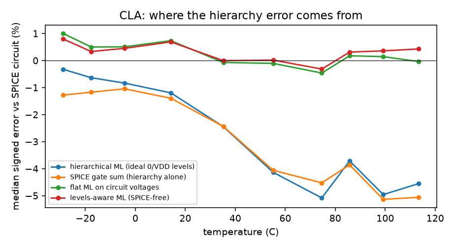
Compared with the gates. The hierarchical estimate reaches 96.41 % mean accuracy (median error 2.59 %, bias -2.56 %), clearly below the gate level, as the brief anticipates. The extra reference points show where the error comes from:
The hierarchy error grows with temperature, from about -1.1 % below 0 °C
to -4.7 % above 80 °C. In a real chain a logic 0 sits tens of mV above
ground (Figure 12) and a logic 1 below VDD, and the shift grows with leakage, so with temperature. The next gate's OFF transistor sees
that offset on its gate, and sub-threshold current is exponential in it, so the real circuit leaks more than the ideal-input sum. Loading
(tunnelling current drawn by fan-out pins) is a much smaller effect: the levels-aware hierarchy below ignores it and still removes the bias.
Per vector, the median error ranges from 1.40 % (inputs 0001111) to 3.71 %
(inputs 0110111); results/circuit_results.csv lists all 128.
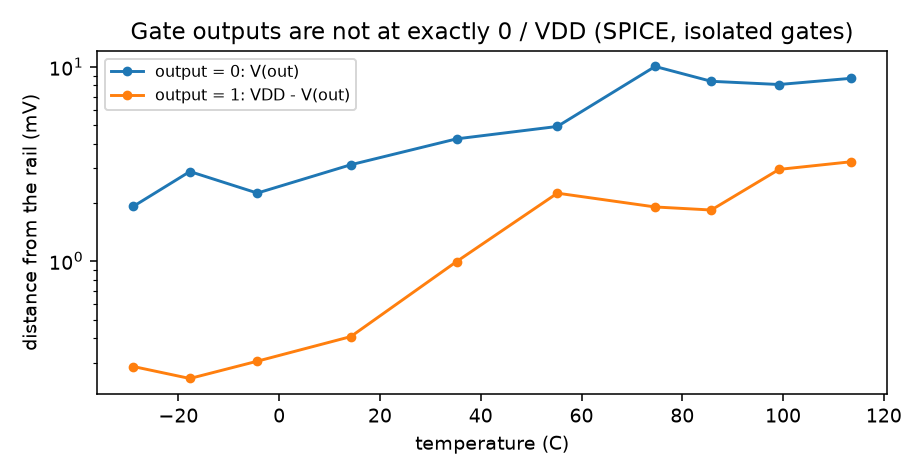
Where. At gate level the error depends mainly on temperature and supply. Below 0 °C the median |error| is 1.03 % (p95 3.18 %), against 0.57 % (p95 2.05 %) above 40 °C. Above 1.05 V the p95 is 3.17 %, against 2.04 % below 0.95 V. The worst points all come from a few cold, high-VDD corners (Table 9) and from the cases that leak through one OFF PMOS (§4). Process parameters have weak correlation with the error (|r| < 0.1 for every parameter), so the models capture the process dependence well.
| Gate | inputs | corner | T (°C) | VDD (V) | NMOS vth0 | PMOS vth0 | error % |
|---|---|---|---|---|---|---|---|
| INV | 1 | 76 | -24.0 | 1.089 | 0.497 | -0.428 | +5.73 |
| AND2 | 00 | 76 | -24.0 | 1.089 | 0.497 | -0.428 | +5.73 |
| AND2 | 10 | 76 | -24.0 | 1.089 | 0.497 | -0.428 | +5.71 |
| AND2 | 01 | 76 | -24.0 | 1.089 | 0.497 | -0.428 | +5.40 |
| NOR2 | 01 | 76 | -24.0 | 1.089 | 0.497 | -0.428 | +5.18 |
| OR2 | 00 | 76 | -24.0 | 1.089 | 0.497 | -0.428 | +5.08 |
| INV | 0 | 184 | -1.0 | 1.083 | 0.435 | -0.420 | +4.97 |
| OR2 | 11 | 184 | -1.0 | 1.083 | 0.435 | -0.420 | +4.97 |
Why. (1) Cold OFF currents are the smallest in the dataset, and log G changes fastest with Vth/VT there. The same error in log G is a larger relative current error, and cold, high-VDD corners are corners of the 12-dimensional input box where uniform data is thinnest. (2) At high VDD, drain-induced barrier lowering and GIDL make the OFF current depend more steeply on Vds exactly where the gate operates (Vds = VDD). (3) The PMOS-OFF channel is the weakest of the four models, because its leakage depends on several competing mechanisms of similar size.
A SPICE artefact found along the way. Before the fix, the worst "error" was +126 % on INV A=1 at corner 198 (112 °C, 1.088 V).
The ML was right: ngspice had converged to a spurious operating point. Sweeping V(out) with a forcing source shows a single true KCL root at
42 mV (3.58 µA). The default Newton start gets stuck at a narrow kink of the model near 22 mV. Starting every gate and circuit
simulation from a logic-level .nodeset removes it. Only this one of the 3,600 gate points moved by more than 0.1 %, and no CLA point did.
Circuit level. The CLA error of the brief's method is dominated by the ideal-level assumption (§5), with a -2.64 % bias that grows with temperature. With the levels corrected, the remaining CLA error (0.66 % median) equals the gate-level ML error.
The ML models can predict the operating point as well as the leakage. At DC, the ML-predicted terminal currents into every internal node sum
to zero. leakml/solve.py solves this KCL system for all unknown nodes at once: damped Newton, finite-difference Jacobian, each step
limited to 50 mV as SPICE does. It is vectorised over corners and iterates only on rows that have not converged. The initial guess puts logic
nodes at their rails and stack nodes at the rail of their ON neighbour. Every gate case converges, with the KCL residual below 10−12 A.
The solved node voltages are within 2.47 mV of SPICE, and the leakage computed from them is as accurate as with SPICE voltages
(99.12 % vs 99.10 %).
The same solver fixes the CLA hierarchy. Gates are visited in topological order, and each one is solved with its inputs set to the ML-predicted output voltages of its drivers instead of ideal 0/VDD. Rows that share a corner and input voltages are solved once. Over 42 gates the solver needs at most 12 iterations and leaves 0 rows unconverged. The predicted gate-output voltages match the full SPICE circuit to 0.044 mV in the median (2.90 mV max). The CLA leakage improves to 99.21 % mean accuracy, with median error 0.66 %, p95 2.18 %, max 3.52 % and bias +0.28 %. That beats even the flat ML on SPICE voltages (99.14 %) and uses no SPICE input at all: the full chain from the model card to circuit leakage runs on four ML models.
In standby, a block can be parked at the input vector that leaks least. The CLA's 128 vectors differ by 1.22× in mean leakage. Ranked by ML, the vectors follow SPICE with Spearman ρ = 1.000 (levels-aware) and 0.970 (ideal-level hierarchy). Both pick the same minimum-leakage vector as SPICE (1001000). Choosing the best vector separately in each corner, the levels-aware ML finds the exact SPICE optimum in 99 % of corners and is never more than 0.18 % above it.
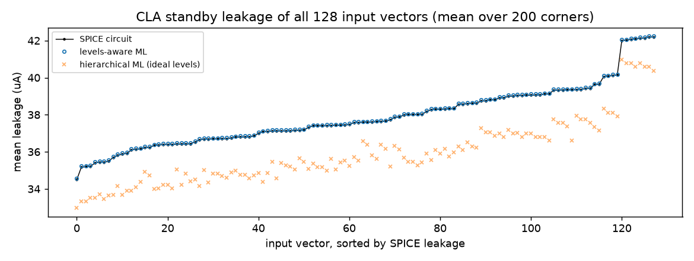
SPICE reports only total currents, but the bipole models split leakage into physical mechanisms. Averaged over the 18 gate cases at nominal process and VDD:
Gate tunnelling matters most in the stacked cases, where the stack has suppressed sub-threshold leakage: it is 63 % of NAND2 00 and 55 % of NOR2 11 near room temperature.
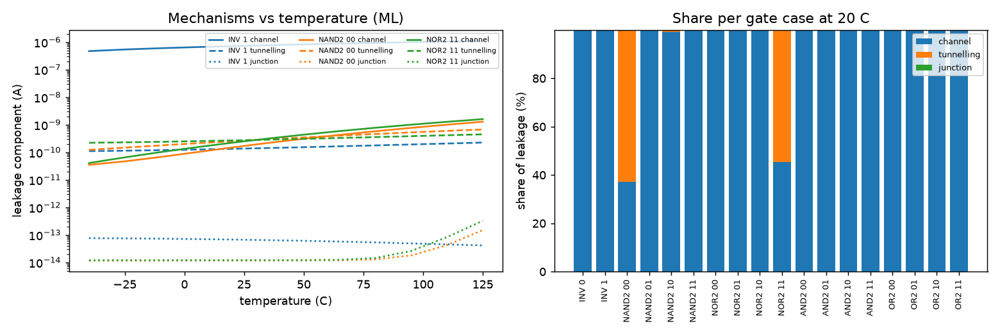
Each PVT parameter is moved one at a time (process and VDD ±10 %, T to −40 / 125 °C) and the levels-aware CLA leakage is averaged over all 128 vectors. The largest effects are VDD -10% (0.37×), VDD +10% (2.61×), pmos vth0 +10% (0.44×), pmos vth0 -10% (2.18×). Supply voltage has the largest effect, through drain-induced barrier lowering: a higher Vds lowers the OFF device's threshold. Next come PMOS vth0 and temperature, as the sub-threshold law exp(−Vth/nVT) predicts. PMOS parameters matter more than NMOS ones because the PMOS devices are twice as wide and carry most of the CLA leakage. Oxide thickness, mobility and junction depth change the leakage by less than 10 %.
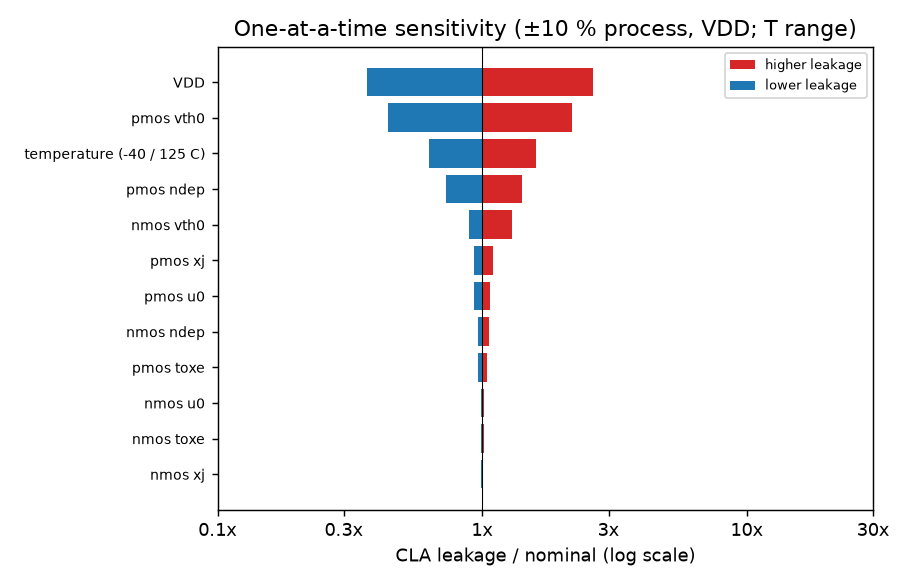
Once trained, the models make large statistical studies cheap. The levels-aware CLA leakage is evaluated at 5,000 new random corners for the minimum- and maximum-leakage vectors. For vector 1001000, the median is 2.83×10-5 A and the 99th percentile 4.38× the median (lognormal σ = 0.79; the 200 SPICE corners give median 2.95×10-5 A, KS p = 0.93). For vector 1110001, the median is 3.50×10-5 A and the 99th percentile 4.19× the median (lognormal σ = 0.77; the 200 SPICE corners give median 3.64×10-5 A, KS p = 0.89). The distribution is strongly right-skewed: worst-case design must budget for several times the median leakage.
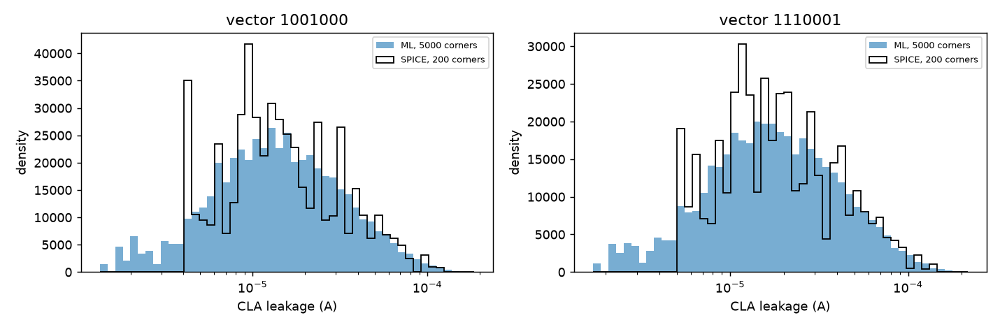
Each of the five ensemble members gives its own gate leakage, and their spread is a free error bar. The spread correlates only weakly with the real error (Spearman ρ = 0.17). The 20 % of points with the smallest spread have median error 0.60 %, and the 20 % with the largest have 0.79 %. The members disagree where data is thin, but most of the remaining error is shared by all members, a systematic bias of the training distribution. An ensemble cannot detect such a bias; only more data where the gates operate can remove it.
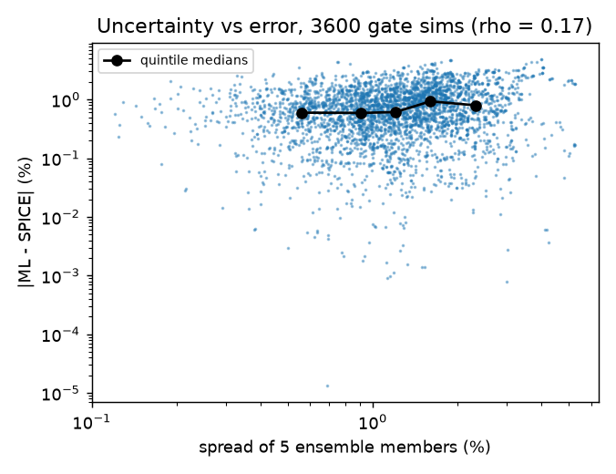
SPICE needs 48.07 ms of CPU time per CLA operating point. ML inference on the same 204 transistors, given the node voltages, needs 4.257 ms, 11× less. The brief's hierarchical lookup costs 1.7 s for all 25,600 points once the gate tables exist. The SPICE-free levels-aware solve of all 25,600 points takes 402 s on one core, about 3× less CPU time than SPICE. Most of that time goes into the finite-difference Jacobian, which needs many model calls per Newton step; an analytic Jacobian of the MLPs would remove most of it.
To check that nothing was tuned to the CLA, the brief's other test circuit was built from the same library: a balanced tree of seven 4-NAND2 XORs (28 gates, 112 transistors). It was simulated in SPICE for all 256 vectors at the same 200 corners (51,200 points), with no retraining or other change. The brief's hierarchy reaches 94.80 % mean accuracy (bias -4.04 %). The levels-aware ML hierarchy reaches 99.24 % (median error 0.65 %, p95 1.96 %), confirming the CLA conclusions on a different circuit.
| Comparison | bias % | median err % | p95 err % | max err % | mean acc % |
|---|---|---|---|---|---|
| hierarchical ML (gate sum) vs SPICE circuit | -4.04 | 4.04 | 14.29 | 26.30 | 94.80 |
| SPICE gate sum vs SPICE circuit (hierarchy error) | -4.08 | 4.08 | 13.82 | 25.94 | 94.74 |
| hierarchical ML vs SPICE gate sum (ML error) | +0.14 | 0.71 | 2.35 | 4.15 | 99.12 |
| levels-aware ML hierarchy vs SPICE circuit (SPICE-free) | +0.31 | 0.65 | 1.96 | 3.11 | 99.24 |
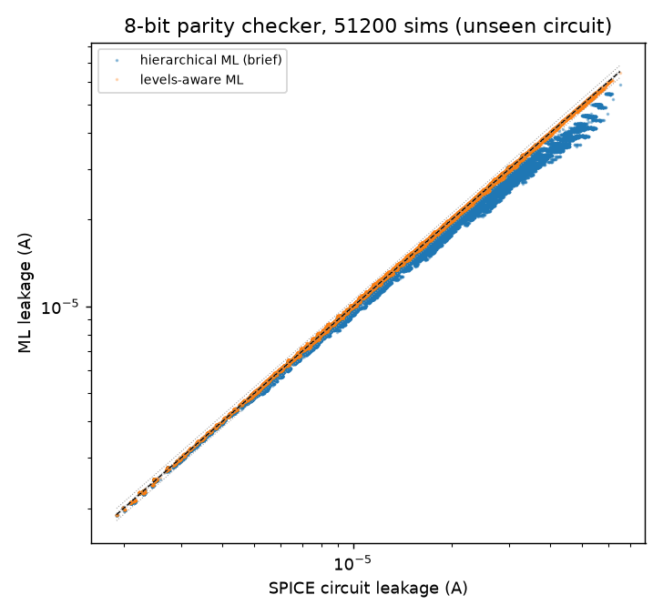
All scripts run in order (./run_all.sh --full) from the model file with fixed seeds. The fast path (./run_all.sh) reuses
the stored data, the saved models and the cached CLA SPICE reference, and reruns validation in minutes. pytest checks 26 invariants:
KCL of the saved models, passivity of the bipoles, netlist/ML topology identity, truth tables, that the CLA adds correctly, the BSIM4 width clamp,
solver convergence, and that the parity checker computes parity.
| # | Deliverable | Where |
|---|---|---|
| 1 | Datasets (4 × 10,000 rows) | data/{nmos,pmos}_{on,off}.csv |
| 2 | Example netlists | netlists/single_*.cir, gate_*.cir, cla3.cir |
| 3 | Kirchhoff check, trend plots | results/kirchhoff_check.csv, figures/data_check_trends.png (Table 1, Figure 1) |
| 4 | Model comparison | results/model_comparison.csv (Table 2) |
| 5 | Chosen models | results/chosen_models_test.csv, figures/pred_vs_spice_*.png, saved_models/*.joblib (Table 3) |
| 6 | Gate results | results/gate_results.csv, results/gate_samples.csv (Table 7) |
| 7 | Gate parity plot | figures/gate_parity.png |
| 8 | CLA results | results/circuit_summary.csv, circuit_results.csv, figures/circuit_parity.png (Table 8) |
| 9 | Code | 00_ … 08_*.py, leakml/, run_all.sh, tests/ |
| 10 | Report | report/Leaky_Lima_Report.pdf (this document, generated by report/build_report.py) |